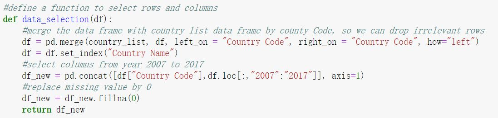
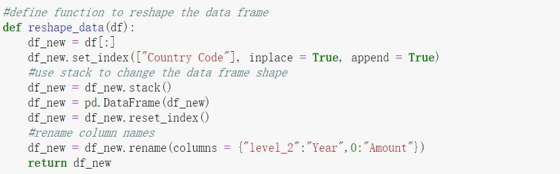

Why study tourism?
The international travel & tourism sector is growring at a fast pace. The World Travel and Tourism Council (WTTC) report found that the travel & tourism industry generated 10.4 percent of all global economic growth. Tourism is not only a kind of leisure, it is also essential in a country's economy. In this analysis, we will investigate the dynamic trend of evolvement in tourism sector and find the top tourist-sending countries and the countries that are most attractive to interntional tourists.
Data Source
The dataset is come from the World Bank. Datalink
World Tourism Organization, Yearbook of Tourism Statistics, Compendium of Tourism Statistics and data files.
The database includes data from more than 200 countries for the period 1995-2017
There are seven datasets
Number_of_arrival
Number_of_departure
Expenditure for travel item
Receipts for travel items
Receipts (% of total exports)
Population
GDP
Data cleaning
- Select the datasheets which will use in the data analysis, and put them together in one Excel file (using excel)
- Define two functions to select relevant data and reshape the data frame format

